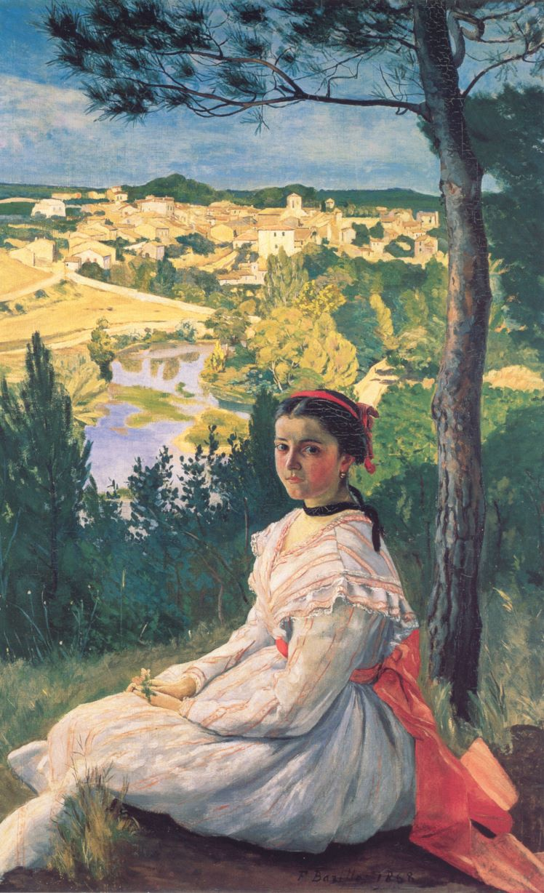
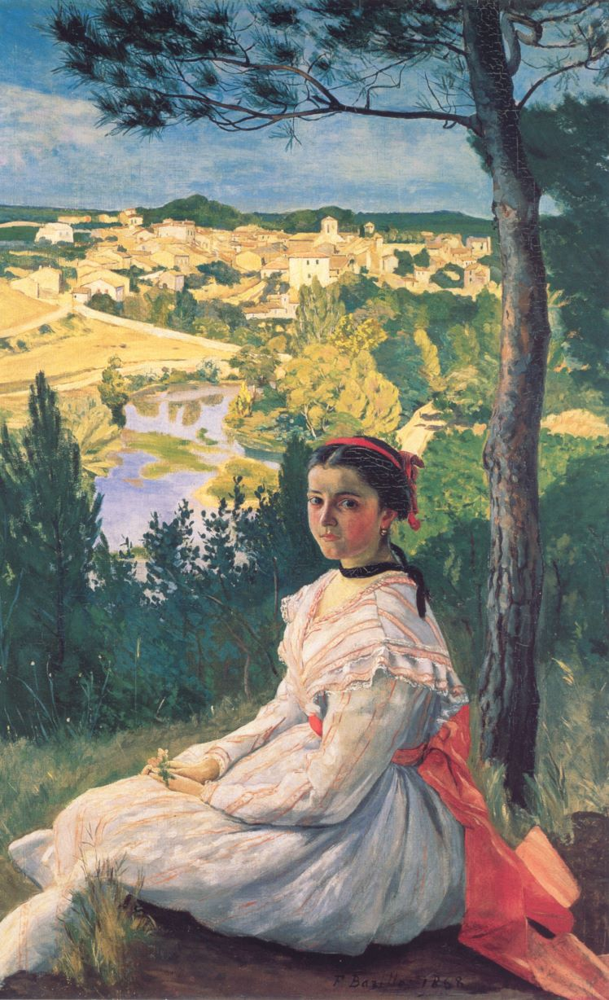
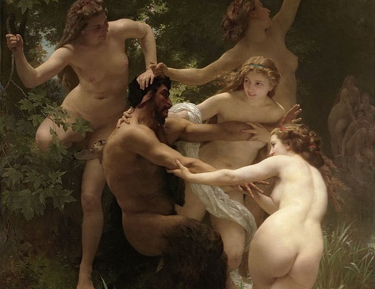

"Impressioon – ma olin selles kindel. Ma just ütlesin endale: et see avaldas mulle muljet, pidi selles olema mingi mulje (...) ja milline vabadus, milline töötluse kergus! Embrüonaalses seisundis tapeet on lõpetatum kui see meremaal."
 

Impressionism
Kunstikriitik Louis Leroy, kes oli graveerija, maalikunstnik ja menukas näitekirjanik,
kirjutas selle näituse kohta mahategeva retsensiooni ajalehes Le Charivari. Pilgates ühe
tollal
tundmatu kunstniku maali, pani ta artiklile pealkirjaks "Impressionistide
näitus".
Leroy kuulutas, et Claude Monet' "Impressioon. Tõusev päike" (Impression, soleil levant)
on parimal juhul visand ning seda saab vaevalt pidada lõpetatud kunstiteoseks.
1800ndatel aastatel alguse saanud impressionism oli radikaalne kunstivool, mille järgijad ei olnud rahul prantsuse riiklikus kunstikoolis läbiviidava õpetusega. Eelkõige soovisid impressionistid murda välja ettemääratud esteetilistest normidest ning luua muud, kui mütoloogilise ning ajaloolise ainestikuga kunsti. Alloleval pildil on näide kunstist, mis järgis tolleaegseid esteetilisi norme. William Adolpe Bouguereau maali "Nümfid ja saatür" esindab akadeemilist doktriini, mis väitis, et maali ja kunsti väärtus seisneb võimes püüelda ajatu ilu poole.
Impressioniste on keeruline rangelt määratleda. Tavapäraselt peetakse impressionistideks rühma kunstnikke, kes asusid maastikumaalijate eeskujul maalima vabas õhus ning kasutasid uudset "visandlikku" laadi. Nende hulka võib lugeda nt Monet, Camille Pissarro ja Auguste Renoiri. Impressionistideks peetakse ka Edgar Degas'd ning Édouard Manet', kuigi ennast nad otseselt impressionistideks ei pidanud. Impressionistide stiili kirjeldab kõige paremini soov kujutada valgust ning mitte näha esemeid kui objekte vaid kui kogumikku värve ja valgust. Võrreldes varasemate kunstivooludega vähenes tsentraalperspektiivi olulisus ning hägunesid tugevad piirjooned. Hilisemalt on impressionistidele omistatud ka laadi kujutada maale pealtvaataja vaatepunktist, seega on maalidel oluline edasi anda pigem emotsiooni ning taju, mida selles hetkes olev vaataja võis kogeda.
Impressionistide stiil oli nii radikaalne, et seda ei soovitud näidata iga-aastasel riiklikul näitusel, mida tunti ka kui Salon, pildil on näha Saloni 1890. aastal. Seevastu korraldasid kunstikud ise näituseid, Manet' kulutas sellele ka oma päranduse. Hiljem aga aktsepteeriti impressionistide maale ka riiklikel kunstinäitustel ning hakati hindama impressionistlikku laadi.
Sooviga kujutada valgust asusid impressionistid harrastama väljas maalimist, mille tagajärjel leiutati ka värvituubis kaasaskantavad värvituubid, kuna väljas oli keeruline värve ise segada. Varem segasid kunstnikud värvid ise, purustades pigmendi õlis. Kuigi kunstnikud väitsid end maalivat vaid väljas, maalisid nad tihti maalid hiljem ateljees üle. Kuigi impressionismi on keeruline rangelt piiritleda, on siiski äratuntavaid tehnikaid, mida impressionistid kasutasid. Objekte maaliti lühikeste pintslitõmmetega ning detailidele pöörati vähe tähelepanu. Värve segati maalil harva, impressionistid eelistasid tekitada maalides kontrasti. Tumedaid värve eelistati mitte kasutada, kuna sooviti kujutada justnimelt valgust. Mõju värvide valikul oli ka sellel, et mitmed eredad värvid said kunstnikele 1800 keskpaigas ning lõpus kättesaadavaks.
Impressionism ei olnud vool vaid maalikunstis, vaid levis ka muudes kunstides. Skulptorit Auguste Rodini peetakse impressionistlikuks, kuna andis oma skulptuuridega edasi valguse mänglust. Samuti võib fotograafide ning filmikunstnike kohta öelda impressionistid, kui nende tehnika keskendub mitte objekti vaid valguse edasi kandmisele.
Impressionismist arenes välja veelgi abstraktsem postimpressionism. Maalil on näha ilmselt tuntuimat postimpressionistlikku maali püäntilistlikus stiilis Georges Seurat' "Pühapäev La Grande Jattel", kus on samuti näha ideed mitte objekti kui ühtse terviku edasiandmisest vaid objekti kui värvi ning valgusosakestest kokkupandud tervikust.